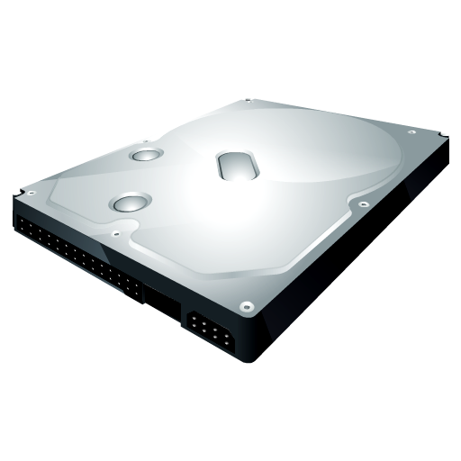

In computing, an optical disc drive (ODD) is a disc drive that uses laser light or electromagnetic waves within or near the visible light spectrum as part of the process of reading or writing data to or from optical discs. Some drives can only read from certain discs, but recent drives can both read and record, also called burners or writers (since they physically burn the organic dye on write-once CD-R, DVD-R and BD-R LTH discs). Compact discs, DVDs, and Blu-ray discs are common types of optical media which can be read and recorded by such drives.
As of 2020, most of the optical disc drives on the market are DVD-ROM drives and BD-ROM drives which read and record from those formats, along with having backward compatibility with CD, CD-R and CD-ROM discs; compact disc drives are no longer manufactured outside of audio devices. Read-only DVD and Blu-ray drives are also manufactured, but are less commonly found in the consumer market and mainly limited to media devices such as game consoles and disc media players. Over the last ten years, laptop computers no longer come with optical disc drives in order to reduce costs and make devices lighter, requiring consumers to purchase external optical drives.
Starting in the mid 2010s, computer manufacturers began to stop including built-in optical disc drives on their products, with the advent of cheap, rugged (scratches can not cause corrupted data, inaccessible files or skipping audio/video), fast and high capacity USB drives and video on demand over the internet. Excluding an optical drive allows for circuit boards in laptops to be larger and less dense, requiring less layers, reducing production costs while also reducing weight and thickness, or for batteries to be larger. Computer case manufacturers also began to stop including 5 1⁄4-inch bays for installing optical disc drives. However, new optical disc drives are still (as of 2020) available for purchase.